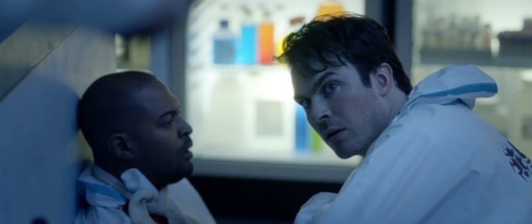

When ex-soldier Ryan Reeve (Noel Clarke) wakes up in the back of a moving van in front of a hooded boy chained to the front of the vehicle, he is bewildered. But not nearly as bewildered as any poor soul attempting to watch this confusing film.
Reeve frees the boy, and at the first opportunity when the van stops, they both jump out of the vehicle, starting a thrilling chase through the streets of futuristic London and onto the grounds of a graveyard, with a couple of thugs hot on their heels. After disposing of one of the pursuers in hand-to-hand combat, Reeve experiences an acute pain in his neck and passes out, but not before realising that he is in fact one of the boy’s abductors.
When he later regains consciousness, he finds himself in an old mansion, surrounded by bookshelves, art and gadgetry and with a noticeboard bearing the plan of boy’s abduction on the wall. Looking into a mirror, he also observes a strange incisions on the side of his neck. He is soon joined by Harkin Langham (Ian Somerhalder), who seems to be his co-conspirator, although Reeve has no recollection of this.
From this point on, the storyline gets progressively more and more confusing. Reeve is constantly losing and regaining consciousness, always finding himself in a completely different place (a brothel, a private jet, a bio weapons laboratory) always only with a few minutes of time to figure out why he is in that particular place and situation, and what his role there might be.
Reeve eventually realises that he plays a major part in some wide-reaching, foul game, where mind-control experiments overseen by the Harkin’s father, Dr. Lloyd Langham (Brian Cox) are conducted by a brilliant Russian scientist, whose son Alex (Art Parkinson) is held as a hostage in order to ensure the scientist’s full cooperation. But by the time the main protagonist figures this all out, you would have lost not only the will to watch this film, but also the will to live.

Wrapping up this review, The Anomaly features some passable computer-generated imagery (London’s futuristic skyline being one of them) as well as wagonfuls of fairly impressive gadgetry but is dragged down by an utterly incomprehensible storyline and some textbook examples of truly awful acting.